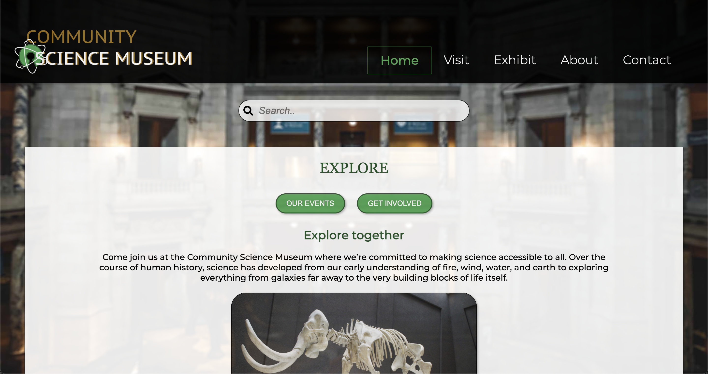

The chosen websites
RAINYDAYS

The RainyDays site was created based on one of three given briefs. The site was made to be a clothening store selling jackets for all kind of weather. The site was originally created using HTML and CSS, while JS was added later on using API call and verfication.
Click here for Github! Click here for Live site!COMMUNITY SCIENCE MUSEUM
The Community Science Museum site was created as a semester project. The semester project was to make a working website for a new local community science museum, aimed to attract middle school children and their families. The site was created using HTML and CSS.
Click here for Github! Click here for Live site!RENOVATION BLOG

The Renovation Blog site was created as an exam project for our first year. The assignment was to chose a theme/ topic and create a blog about it, using HTML, CSS and JS. We used wordpress for headless API and create the rest of the blog using visual studio code.
Click here for Github! Click here for Live site!